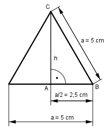

Pythagoras Aufgabe 44 Berechnen Sie die Fläche A eines gleichseitigen Dreiecks in cm2, wenn die Seite a = 5 cm.

Satz von Pythagoras im Dreieck ABC: BC2 = h2 + AB2 |- AB2 h2 = BC2 - AB2 a h2 = a2 - (---)2 2 h2 = 52 cm2 - 2,52 cm2 = 18,75 cm2 |√ h = 4,3 cm a * h 5 cm * 4,3 cm A = ------- = --------------- 2 2 A = 10,8 cm2